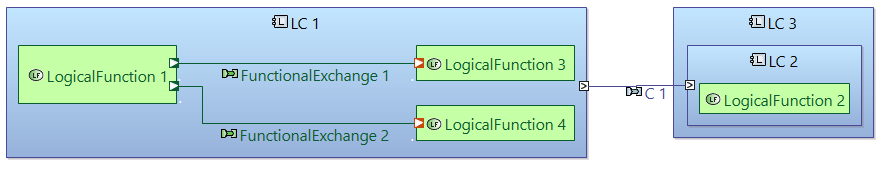
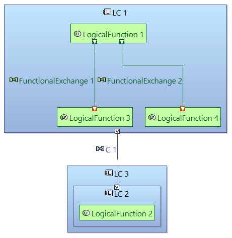
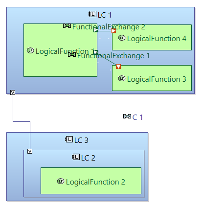

Eclipse Layout Kernel (or ELK) offers a collection of layout algorithms. Sirius diagrams, on the other side, can be extended to use such algorithms when performing Layout command.
Some of those layout algorithms have been integrated in Capella Diagrams to improve Layout All action from the diagram toolbar.
When using Capella ELK integration Feature, default layout algorithm is replaced by an ELK algorithm.
To change layout algorithm for a open diagram, select the background of diagram and in the Rulers & Grid tab of Properties view, pick a choice from Algorithm list.
Default algorithm will restore the default behavior for Layout actions implemented by Draw2D.
This section shows the influence of algorithm on Layout All action.
For the same Architecture Blank diagram, algorithm choice leads to different result.
| Algorithm | Layout All result |
|---|---|
| ELK Layer Horizontal |  |
| ELK Layer Vertical |  |
| Default |  |
ELK layouts are not compatible with Snap to Grid behavior. When using any of them, you should disable this option otherwise Ports and Lines may be misplaced.
This feature is considered as experimental because of remaining bugs concerning the ELK behavior and integration.